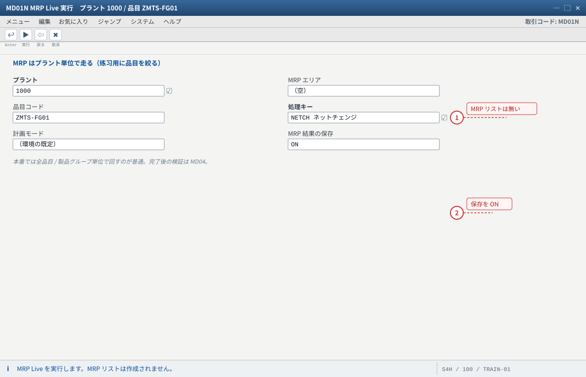
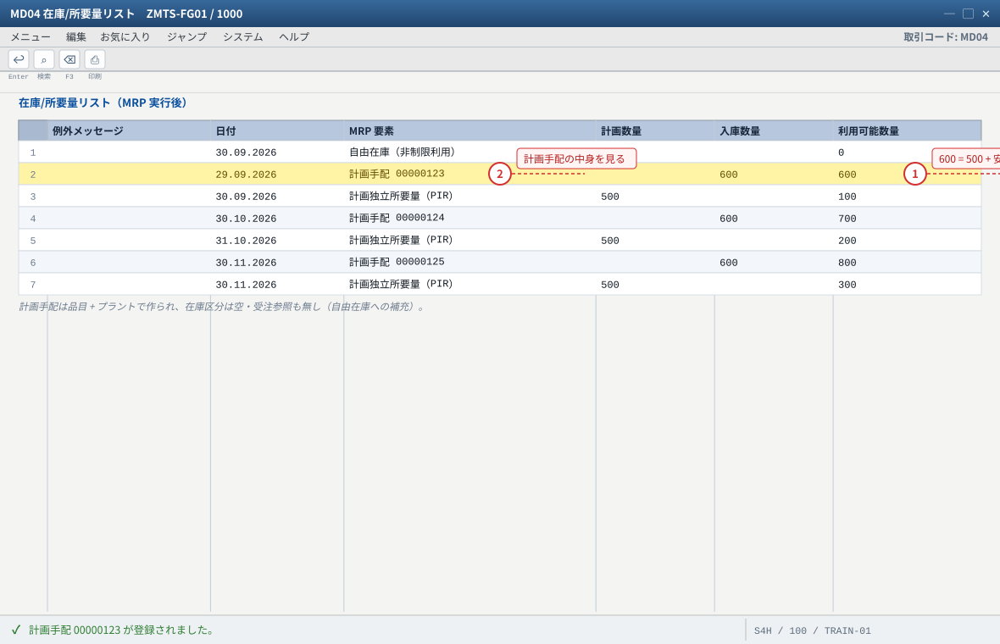
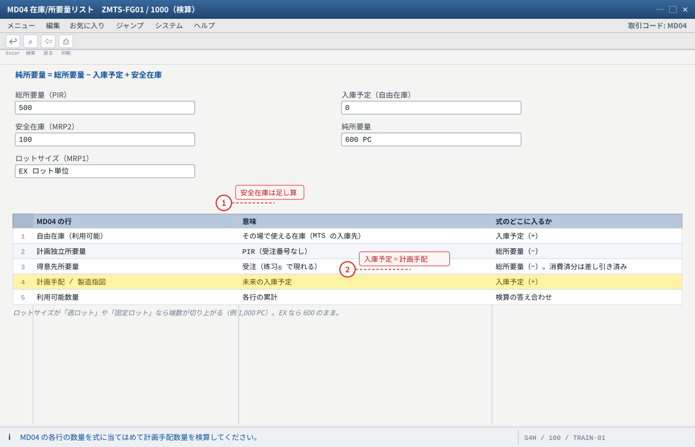
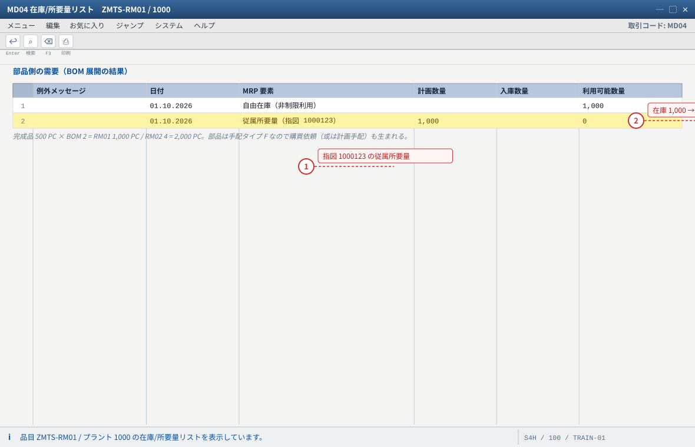
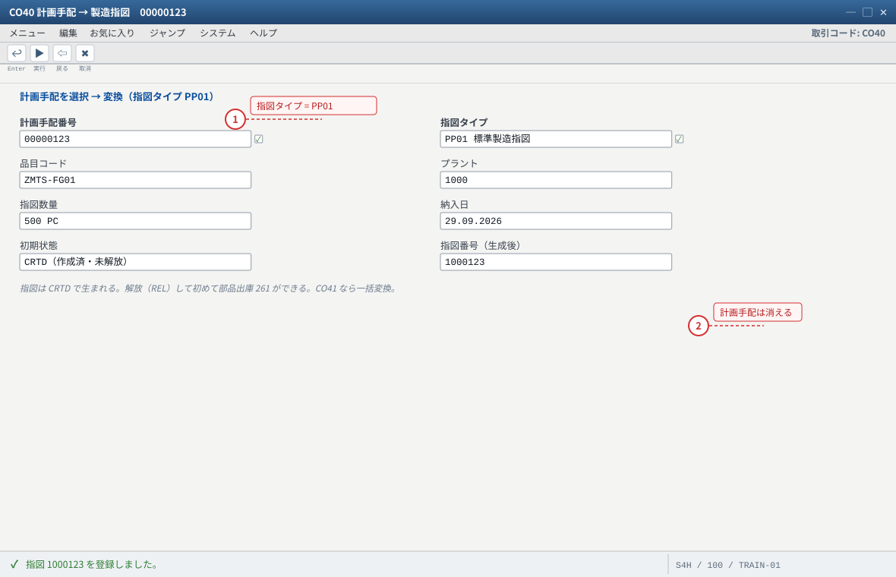
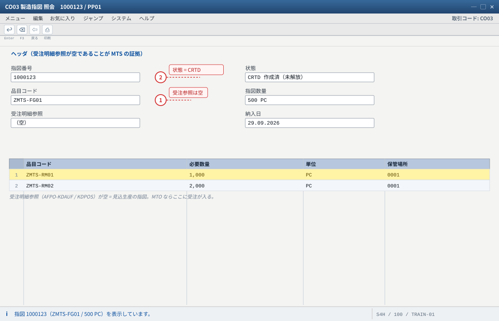
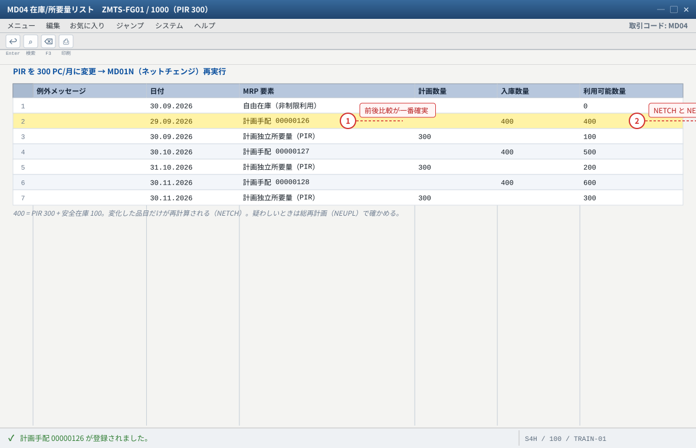

练习② MRP 実行と計画手配（把预测变成待生产的订单）
.png 放进 assets/gui/ 后执行 python3 tools/swap_gui_images.py <site> --apply 即可一键替换。本练习是「纯计算」的一课：把 PIR 的 -1,500 PC 变成 1,500 PC 的计划手配，同时让部品的需求自动出现。做完你应该能自己算出 MRP 为什么给出这个数量——不是背结论，而是能把算式倒着讲回去。
MRP Live
500 PC
RM01 1,000
PP01
状態 CRTD
2-1 MRP 実行（MD01N / MRP Live）
| 入力項目 | 値（本教材） | 説明 |
|---|---|---|
| プラント | 1000 | MRP はプラント単位で走る |
| 品目（或は製品グループ） | ZMTS-FG01（练习用に絞る） | 本番では全体/製品グループ単位で回すのが普通 |
| 処理キー（Processing key） | 環境の既定（例：ネットチェンジ相当） | F1 で意味を確認。NEUPL = 総再計画 / NETCH = ネットチェンジ |
| 計画モード / 実行タイプ | 環境の既定 | 「MRP 結果の保存」等のフラグは実行後に MD04 で検証する |
MD01N→ プラント1000/ 品目ZMTS-FG01→ 処理キーを確認（F1）→ 実行。- 実行ログ（結果一覧）を確認。MRP リストは作成されないので、完了後の検証は
MD04。 MD04→ZMTS-FG01：計画手配が生成されている（在庫区分は空・受注番号なし）。- 単品目でやり直したいときは
MD02（単品目・多階層）。MD03は提供されない。
MD04 に計画手配の行（ダブルクリックで計画手配の明細：数量・納入日・品目）。② 表：
SE16N: PLAF（キー：品目 + プラント）→ PLNUM（計画手配番号）/ GSMNG（数量）/ PEDTR（納入日）。③ MRP パラメータの既定値：
OMDU。MRP Live の挙動差は SAP KBA 2640393 / SAP Note 1914010。MD05/MD06（MRP リスト）を見に行って「無い」と焦る → MRP Live は作りません。② 実行したのに
MD04 が変わらない → 実行のパラメータで「保存」が外れている、或は別プラントで実行した。MD04 のヘッダ（品目/プラント）を確認。③ 数量が PIR と一致しない → 安全在庫・ロットサイズ・既存在庫・既存の入庫予定が効いている（正常）。次の 2-2 で検算する。

- 1 実行後に MD05 / MD06 を探しても無い。MRP Live は MRP リストを作らない（KBA 2640393）
- 2 「結果の保存」が外れていると逐次表示だけで計画手配が残らないことがある
自システムでの確認：実行ログ（処理品目数）と OMDU（MRP パラメータ）。単品目でやり直すときは MD02。

- 1 数量が PIR と一致しないときは安全在庫・ロットサイズ・既存の入庫予定が効いている（正常）。2-2 で検算する
- 2 ダブルクリックで計画手配の明細（数量・納入日・品目）が開く
自システムでの確認：SE16N: PLAF（品目 + プラント）→ PLNUM / GSMNG / PEDTR。
2-2 純所要量の検算（MD04 の読み方）
MRP の結果は必ず次の式で説明できる。合わないときは式の各項を MD04 から拾い直す——これができると故障排查が一気に速くなる。
純所要量 = 総所要量 − 入庫予定 + 安全在庫
本教材の例（1 か月目、PIR 500・在庫 0・安全在庫 100・ロットサイズ EX）
総所要量（PIR） 500
入庫予定 0
安全在庫 100
─────────────────────
純所要量 600 ← 計画手配 600 PC（ロットサイズ EX = 端数そのまま）
※ ロットサイズが「EX（ロット単位）」なら 600 のまま。
「週ロット」や「固定ロット」なら端数が切り上がる（例 1,000 PC）。
| MD04 の行 | 意味 | 式のどこに入るか |
|---|---|---|
| 自由在庫（利用可能） | その場で使える在庫（MTS の入庫先） | 入庫予定（+） |
| 計画独立所要量 | PIR（受注番号なし） | 総所要量（−） |
| 得意先所要量 | 受注（练习④ で現れる） | 総所要量（−）。ただし PIR を消費した分は差し引き済み |
| 計画手配 / 製造指図 | 未来の入庫予定 | 入庫予定（+） |
| 利用可能数量 | 各行の累計。マイナスは不足 | 検算の答え合わせ |
MD04→ZMTS-FG01：「入庫/所要量」を上から読む。- 各行の数量を紙に写し、上の式で 計画手配の数量を予測する。然后看系统给的数是否一致。
- 在库存处（例：练习③ 后库存 500）再跑一次 MRP，观察计划手配数量如何下降（入庫予定が増える）。
- 安全在庫を
0と100で比較すると、安全在庫が純所要量に足されることが確かめられる（MM02MRP2 → 変更 →MD02→MD04）。
MD04 の各行の数量と、SE16N: PLAF（計画手配）・PBED（PIR）・MARD（自由在庫）を突き合わせる。② ロットサイズの効果：
MM03 MRP1 のロットサイズ（EX）と、MD04 に現れた数量の端数処理を比較。③ S/4HANA の MRP は「正味所要量計算」の結果を
MDTB（品目・要素の集計）に持つ——SE16N: MDTB で確認できる。MD04 で全部見える）。② 安全在庫の扱いを「今あるべき在庫」と誤解 → 安全在庫は純所要量に足される仮想在庫（在庫 + 100 ではなく、需要 500 + 100 = 600 を補う）。
100 → 300 に変えて MD02 を実行し、計画手配の数量変化を記録する。次に 0 に戻して再実行。「安全在庫を上げると在庫が増える」を実測で確かめる（見込生産の在庫最適化の入口）。
- 1 安全在庫は「今あるべき在庫」ではなく純所要量に足される仮想在庫（需要 500 + 100 = 600）
- 2 計画手配は入庫予定（+）。指図に変換されると同じ行が「製造指図」になる
自システムでの確認：SE16N: PLAF（計画手配）/ PBED（PIR）/ MARD（自由在庫）/ MDTB（正味所要量計算の結果）。
2-3 部品への展開（従属所要量）
完成品の计划手配/指図ができた時点で、BOM が展開されて部品の需要が生まれる。MTS でも MTO でも同じ仕組み（違いは在庫の所属だけ）。
完成品 500 PC（BOM: RM01 × 2、RM02 × 4） → RM01 の従属所要量 1,000 PC → RM02 の従属所要量 2,000 PC 部品は MRP タイプ PD / 手配タイプ F（外部調達）なので → 購買依頼（或は計画手配）が生まれる（购买流程は练习⑤ の发展课题）
MD04→ZMTS-RM01/ プラント1000：従属所要量（或被品目需求）が出ているか確認。- 在庫（1,000 PC の初期在庫）と比較し、追加調達が必要かどうかを判断する。
CO03（指図がまだ無ければMD04から計画手配を開く）で構成品目を確認する。- 部品の在庫を練習③ の前に十分に用意しておく（配置 C1）。
MD04（部品側）・SE16N: RESB（指図の部品予約：指図番号 RSNUM / 品目 / 必要数量）・SE16N: MDTB（従属所要量）。「従属所要量」の元素名はシステム言語で変わるので、受注番号/指図番号が参照されているかで判別する。
② 数量が BOM と合わない → BOM の基本数量（Base quantity）を 100 PC などにしている（×2 の倍数になっている）。
CS03 で確認。③ 部品が受注在庫に引き込まれている → 品目 MRP4 の個別/包括所要量が空でない（MTS では空）。
MD02 実行後の部品所要量が 2,000 / 4,000 になることを確認する。—— これが「見込生産の在庫リスクは BOM を通じて増幅する」ということ。
- 1 従属所要量の行に指図番号が参照されている = BOM 展開が効いた証拠
- 2 初期在庫 1,000 PC がちょうど消費される。练习③ の 261 出庫の前提
自システムでの確認：SE16N: RESB（指図の部品予約）/ MDTB（従属所要量）。要素名はシステム言語で変わるため、指図番号の参照有無で判断します。
2-4 計画手配 → 製造指図（CO40 / CO41）
| 項目 | 値 | 説明 |
|---|---|---|
| 変換 T-code | CO40（単品目/計画手配単位）/ CO41（一括） | MD04 の計画手配行から「変換」でも可 |
| 指図タイプ | PP01（品目 MRP2 の伝票タイプ） | 変換時に変更可（练习では変更しない） |
| 指図数量 / 納入日 | 計画手配の値（例 500 PC） | 変換後に CO02 で変更可 |
| 初期状態 | CRTD（作成済・未解放） | 解放（REL）して初めて部品出庫できる |
CO40→ 計画手配番号（MD04或はPLAFで確認）→ 変換 → 指図番号がメッセージで出る。CO03→ 指図 → ヘッダ（品目・数量・納入日・状態 CRTD）を確認。- 「構成品目」（部品予約
RESB）と「工程」（作業手順から転記）を確認。 - 受注明細参照（
AFPO-KDAUF/KDPOS）が空であることを確認——これが MTS の指図の証拠（MTO ならここに受注が入る）。 - 次に
CO02→ 解放（REL）→ 状態を確認（练习③ の前提）。
CO03 ヘッダ（状態・数量）、構成品目、工程。表：
SE16N: AUFK（指図ヘッダ：AUFNR/AUART/STAT）、SE16N: AFPO（KDAUF/KDPOS が空であること）、SE16N: RESB（部品予約）、SE16N: AFKO（PLNUM = 元の計画手配番号）。計画手配が消えていること（変換でなくなる）も
MD04 / PLAF で確認する。② 部品予約の数量が 0 → BOM の有効日切れ、或は工程割当（
CA01 の割当）忘れ。③ 指図が
CRTD のまま 261 をしようとしてエラー → 先に解放（CO02）。④ 受注参照が入っている → 品目 MRP4 が「個別所要量のみ」（MTO 化している）。C2 を見直す。
CO03 のヘッダに表示される「状態」を全部読み、CRTD → REL → CNF → DLV → TECO の順にどう変わっていくかを表にする（练习③・⑤ で実際に遷移させる）。讲师版に解答があります（练习の解答）。
- 1 指図タイプは品目 MRP2 の伝票タイプ（PP01）。変換時に変更もできるが练习では変えない
- 2 変換で計画手配は消える（MD04 / PLAF で確認する）
自システムでの確認：CO03 でヘッダ確認。表は SE16N: AFKO（PLNUM = 元の計画手配番号）。

- 1 受注明細参照が空であることが MTS の証拠（MTO はここに受注が入る）
- 2 状態はまだ CRTD。261 の前に 3-1 で解放（REL）する
自システムでの確認：SE16N: AUFK（AUFNR / AUART / STAT）/ AFPO（KDAUF・KDPOS が空）/ RESB（部品予約）。
2-5 ネットチェンジの実験（MRP は「全部は計算しない」）
現場の MRP は 1 日に何度も回ります。そのたびに全品目を計算していたら日が暮れる——だから MRP は変化したものだけを計算します（ネットチェンジ）。見込生産では、この「変化」の主役が PIR と库存です。
| モード | 動き | 使いどころ |
|---|---|---|
ネットチェンジ（NETCH 相当） | 前回の MRP 以降に変化のあった品目だけ再計算 | 日次のルーチン |
総再計画（NEUPL 相当） | MRP 対象の全品目を再計算 | 設定変更後・データ不整合時の「リセット」 |
MD04で現在の計画手配数量を記録（例 600 PC）。MD62で PIR を 500 → 300 に変更。MD01N（ネットチェンジ相当・品目ZMTS-FG01）を実行 →MD04で計画手配が 400 PC（300 + 安全在庫 100）に変わっていることを確認。- 在庫を動かす（练习③ の 101 入庫）→ MRP 再実行 → 需要が減っても库存で賄える分は計画手配が消える、を確認。
MD04 の前後比較が最も確実。実行ログ（MD01N の結果一覧）に「処理品目数」が出れば、ネットチェンジが効いている（＝全品目ではない）ことの根拠になる。MRP Live と古典 MRP の差異（MRP リスト無し・購買依頼は常に生成可など）は SAP KBA 2640393。
② 総再計画を本番で常用 → 実行時間と負荷が跳ね上がる。練習で両方を体感し、業務では使い分ける。
MD04 の行から説明する。
- 1 前後の MD04 を比較するのが最も確実。実行ログの「処理品目数」がネットチェンジの根拠になる
- 2 総再計画（NEUPL）は全品目を再計算する。本番で常用すると負荷が跳ね上がる
自システムでの確認：MD01N の実行ログ（処理品目数）と MD04 の前後比較。MRP Live と古典 MRP の差は SAP KBA 2640393。
期待结果汇总（本练习做完时的系统状态）
| # | 期待结果 | 確認方法 |
|---|---|---|
| 1 | MD01N 実行後、ZMTS-FG01 に計画手配（例 600 PC / 月）が生成される | MD04・PLAF |
| 2 | 計画手配の在庫区分は空・受注番号なし | MD04 計画手配の明細 |
| 3 | 部品（ZMTS-RM01/RM02）に従属所要量が出る（1,000 / 2,000 PC） | MD04（部品） |
| 4 | CO40/CO41 で PP01 の製造指図に変換でき、状態 CRTD | CO03・AUFK |
| 5 | 指図の AFPO-KDAUF/KDPOS が空（見込生産の証拠） | CO03 ヘッダ / SE16N: AFPO |
| 6 | 純所要量が「総所要量 − 入庫予定 + 安全在庫」で検算できる | 手計算 + MD04 |
つまずきと対処（本练习版）
| 症状 | 根因の候補 | 確認手順 |
|---|---|---|
| MRP 後も計画手配が無い | MRP タイプ ND / 手配タイプ空 / 純所要量が 0（在庫で足りている） | MM03 MRP1・MRP2 → MD04 の利用可能数量 |
| 計画手配の数量が想定より多い | ロットサイズ（固定ロット/週ロット）・安全在庫・既存の入庫予定なし | MM03 MRP1 のロットサイズ → MD04 全行 |
| 計画手配の数量が想定より少ない | 既存の計画手配/指図/購買発注が入庫予定として効いている | MD04 の入庫予定行・PLAF・AUFK |
| 部品に従属所要量が出ない | BOM の有効日切れ / 工程割当なし / 部品に MRP ビューなし | CS03・CA03・MM03 |
| 変換（CO40/CO41）でエラー | 手配タイプ空・指図タイプ不正・既に変換済み | MM03 MRP1/2 → PLAF の残存確認 |
| 「MRP リストが無い」と言われる | MRP Live（MD01N）は MRP リストを作らない | MD04 を見る（KBA 2640393） |
验收（完成基准）
MD01Nを実行し、MD04に計画手配が生成されたことを確認した。- 計画手配の数量を「総所要量 − 入庫予定 + 安全在庫」で検算し、数字が合った（或は差の理由を説明できた）。
- 安全在庫を変えると計画手配数量が変わることを実測した。
- 部品（RM01/RM02）に従属所要量が出ることを確認し、BOM の倍数で計算されていると言える。
CO40/CO41で計画手配を製造指図（PP01）に変換でき、CO03で状態を確認した。- 指図の受注明細参照（
AFPO-KDAUF/KDPOS）が空であることを確認した（MTS の証拠）。 - ネットチェンジ（PIR 変更 → 再実行）で計画手配が追従することを確認した。
MD03が無い理由（MRP Live）と、MRP リストを期待してはいけない理由を説明できる。
MD01N）と古典 MRP の差異・MRP リスト無し・MD03 非提供：SAP KBA 2640393 / SAP Note 1914010。正味所要量計算と戦略 40 の挙動：SAP Help Net Requirements Planning (10) / Planning with Final Assembly (40)（SAP ERP）・SAP PRESS blog 4 Strategies for Make-to-Stock Production with SAP S/4HANA。
関連表（
PLAF/MDTB/RESB/AFPO/MARC）与 OMDU：SAP Help（Support Content）Frequently used database tables and customizing in MRP。部品の従属所要量と BOM 展開、指図タイプ
PP01：SAP Learning / SAP Help（Production Orders）。Cloud の対応フローは スコープアイテム BJ5（PIR → MRP → 計画手配 → 指図変換）。